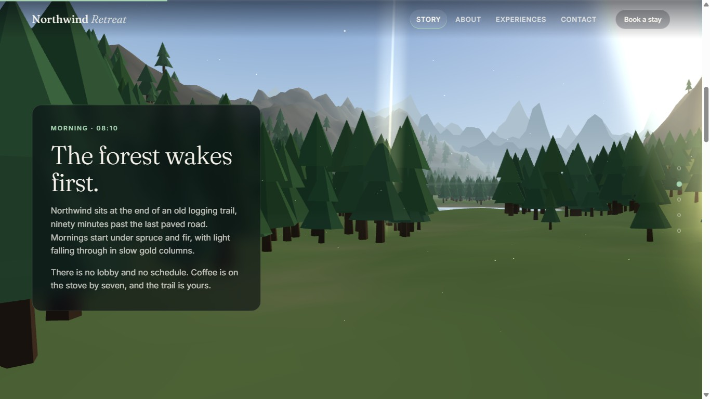
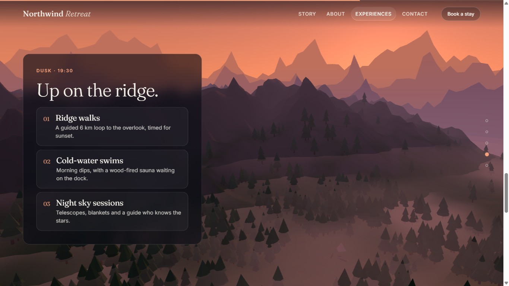
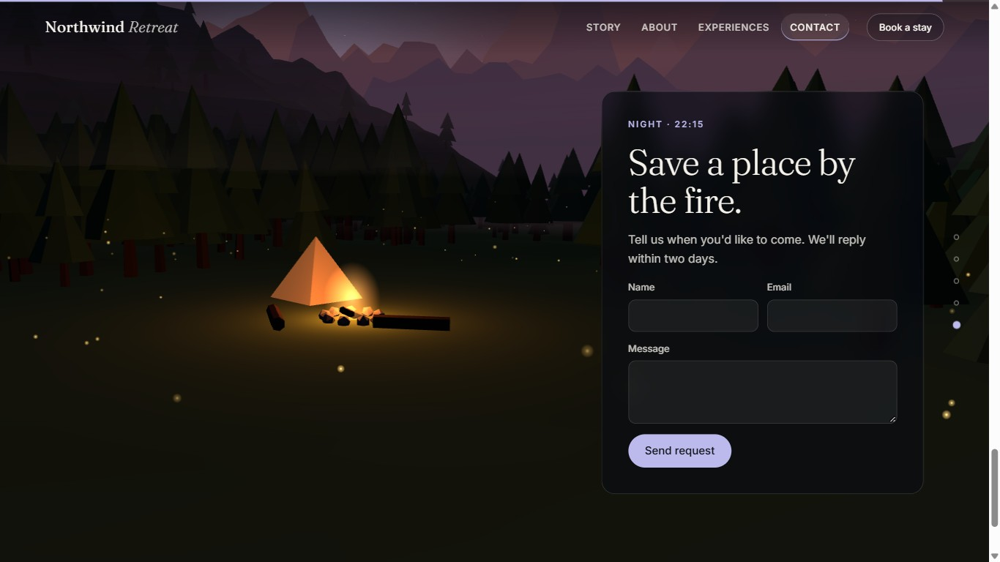
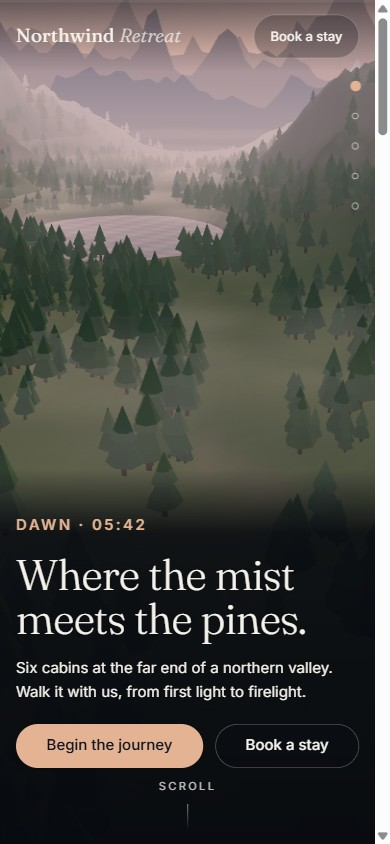

Overview
One valley, five times of day.
The journey has five stops: Dawn at 05:42, Morning at 08:10, Golden hour at 17:55, Dusk at 19:30, and Night at 22:15. Sky, fog, light, water, and accent colour all shift with the clock, and the page's own accent colour follows the scene.
Scroll mapping
Rest, then glide.
- The top of each section is measured as an anchor.
- Between two anchors, the camera rests for the first 42% of the gap while the text is on screen, then eases on with a smootherstep curve.
- That value drives position along two Catmull-Rom curves, one for the camera and one for its look target.
- Time of day and the horizontal focus are interpolated the same way.
- The render loop damps toward those targets with a frame-rate independent exponential, so it feels the same at 30 or 144 fps.
The scene
Everything is generated in code.
Terrain
One height function is the single source of ground height, built on seeded simplex, FBM, and ridged noise.
Forest
About 2,200 low-poly trees in one instanced mesh, placed to avoid the trail, lake, camp, and every rest view's line of sight.
Lake
A custom shader with analytic wave normals, a fresnel blend to the sky, sun glint, and manual fog.
Atmosphere
A gradient sky dome with sun and moon, drifting mist sheets, morning light shafts, pollen, fireflies, stars, and a flickering campfire.
Performance and access
Built to run on ordinary laptops and phones.
- The render loop runs on GSAP's ticker, with adaptive quality and a pause when the tab is hidden.
- The camera is clamped above the terrain every frame.
- On wide screens, the projection shifts with
setViewOffsetso the focal point sits beside the text panel. On narrow screens the scene lifts above the bottom panel instead. - With reduced motion, values jump straight to their targets and nothing idles. Without WebGL, a fallback is shown.
Scope and limits
What is real here.
- Northwind Retreat is a fictional brand. The places, copy, and booking form are placeholders, and nothing typed into the form is sent anywhere.
Screenshots
From dawn to firelight.

The lake shader reflecting the evening sky.

Light shafts through the instanced forest.

Experiences panel on the ridge.

Campfire, fireflies, and stars.

The scene lifts above the bottom panel.